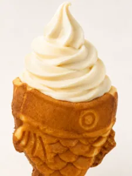

Guild Master and Wand & Whisk Café Head Chef Dylan here,
What in the world is taiyaki???
Now that it takes up my life, I can not imagine not knowing about it. I have lived, breathed, and dreamed about taiyaki for the last three months. But time and time again I get the same question in the Guild Hall: What is taiyaki? Sometimes we get the even more confusing question of: What is teriyaki? So before we dive into the deep end of taiyaki, let me quickly go over its pronunciation and translation.
What Is Taiyaki?

Taiyaki comprises two Japanese words: Tai, meaning “sea bream,” and Yaki, meaning “baked.” This means that taiyaki translates directly to “Baked Sea Bream”. That doesn’t quite answer what taiyaki is, though.At its core, taiyaki is a baked fish-shaped waffle made with a fish-shaped waffle iron. The batter itself is almost identical to traditional American waffle mix. A lot of guests who come into our Guild Hall immediately pick up on a strong waffle-like smell upon walking inside. That is nothing more than the glorious smell of fresh-baked waffles (that also happen to be fish-shaped).
Probably the biggest worry with working here is becoming nose-blind to it. I miss the early days where I could make the entire building smell like waffles. According to nearby stores, I still do; I just can’t smell it myself.
Taiyaki Ice Cream at Wand & Whisk Café
We primarily sell the open-faced taiyaki variant. It could not be a more accurate name, as the only difference is whether the fish has an opening in its mouth. We use the open-ended fish so we can use it as an ice cream cone or a cone topping for our house-made soft serve ice cream. The sealed-mouth variant is more commonly used as a handheld snack or dessert, stuffed with the likes of Nutella or vanilla custard (what we Arkansans would call vanilla pudding). We still maintain this ability with our open-mouthed fish. We allow Guild Guests to stuff their glorified waffle cone with Nutella, pudding, and other fillings to pair with their ice cream.
Why Is Taiyaki Shaped Like a Fish?
So now you know “What is taiyaki”……but what about “Why is taiyaki?” (I want you to read this in the voice of Drax from Guardians of the Galaxy). But seriously….why would anyone ever make a fish-shaped waffle? Taiyaki in its current form originated around 1900 in Japan.
It was based on something called imagawayaki. I am not going to even try to type out the enunciation for that. Imagawayaki is just a sweet baked pastry traditionally stuffed with red bean paste. In 1909, a Japanese businessman was having trouble selling his imagawayaki. So he made the peculiar decision to completely redesign the dish…..by shaping it into a fish.
Sea Bream, Luck, and the Meaning Behind Taiyaki
There is a bit more nuance than just shaping it into a fish, to be honest. Sea Bream (Tai) are considered a symbol of luck and fortune in Japanese Culture. Specifically, Red Sea Bream, as it was an expensive fish that could only be affordable to the higher classes or for special occasions. I like to imagine that the businessman probably wanted everyone to experience the good luck and fortune of the Tai, despite the fish’s traditional high cost. But the actual reason was probably just money.
How Taiyaki Became Popular in America
This, of course, became very popular over the last 100 years. It became a staple in Japanese snacks and desserts pretty quickly. It even snuck its way into America around the post WW2 era. As Japan was undergoing a period of reshaping, a large number of Japanese immigrants made their way to America. Taiyaki swam right alongside them and could be found in Japanese markets and small communities in the “New World”. Taiyaki really hit the mainstream when the international obsession with Japanese Pop Culture began to take shape. In 2016, Taiyaki NYC really pushed the cultural phenomenon of Taiyaki in the United States. It became the gold standard for taiyaki production, and a lot of what they accomplished there directly inspired our Guild Kitchen here at Wand & Whisk Café!
What Flavors of Taiyaki Do We Serve?
So what kind of taiyaki can you actually get at Wand & Whisk Café? We have several different flavors in the Guild Hall, including:
And of course it goes without saying that we have our specialty Cream Royale Ice Cream(Sweet Cream Vanilla).
Try Taiyaki Ice Cream in Little Rock
With that note, I believe that concludes my first blog post. Hopefully you learned something and found my ramblings at least 5% entertaining (they will take me out back if your enjoyment was under 4%). Feel free to reach out to Wand & Whisk Cafe Messenger or wandandwhiskcafe@gmail.com if you have any specific topics you would like me to write about. And lastly, if you have never had taiyaki before… come and visit us in person to see what all the fuss is about.
P.S. I recommend the Creme Royale Ice Cream with Frosted Flakes on top.
This is Magic Chef Dylan Hobby signing out 🙂
Filed under Guild Master's Blogs · Tagged Taiyaki